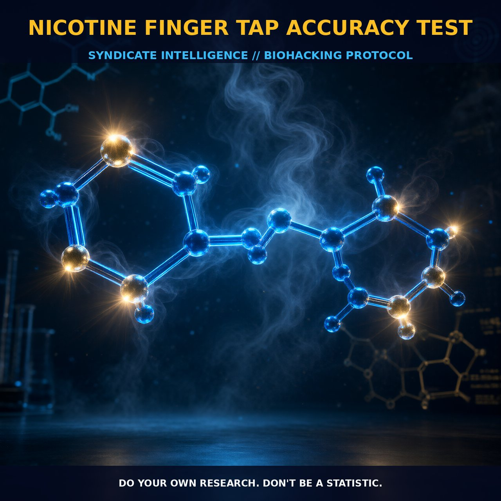

Enhancing Finger Tap Accuracy with Nicotine

1. The Mechanism
Nicotine's impact on cognitive and motor functions is well-documented, particularly its role in enhancing finger tap accuracy and speed. The mechanism by which nicotine achieves these effects primarily involves its interaction with nicotinic acetylcholine receptors (nAChRs), a subset of ionotropic receptors found in the central and peripheral nervous systems.
When nicotine binds to these receptors, it mimics the action of acetylcholine, a neurotransmitter crucial for neural communication. This binding facilitates the influx of calcium and sodium ions into the neuron, increasing neuronal excitability. Enhanced neuronal activity improves synaptic plasticity, fundamental to the enhancement of motor functions such as finger tapping.
Nicotine also modulates dopamine and noradrenaline release, neurotransmitters involved in attention and arousal. By stimulating the release of these neurotransmitters, nicotine can enhance focus and vigilance, allowing for more precise and sustained motor activities. Additionally, nicotine enhances the release of glutamate, a major excitatory neurotransmitter in the brain, crucial for synaptic transmission and plasticity. This increase in glutamate release further supports the improvements in finger tap accuracy and speed observed in individuals using nicotine.
2. Biological Leverage
The biological leverage of nicotine lies in its ability to modulate neurotransmitter systems and enhance synaptic plasticity. Nicotine's binding to nAChRs increases calcium influx, activating calcium-dependent signaling pathways, including calcium/calmodulin-dependent protein kinase II (CaMKII) and protein kinase C (PKC). These pathways play a critical role in the regulation of synaptic strength and the induction of long-term potentiation (LTP), essential for learning and memory.
In addition to enhancing synaptic plasticity, nicotine also modulates cAMP signaling pathways, involved in the regulation of gene expression and protein synthesis. By activating adenylate cyclase through the activation of G-protein coupled receptors (GPCRs), nicotine can increase intracellular cAMP levels, leading to the activation of protein kinase A (PKA) and subsequent phosphorylation of various downstream targets. This cascade of events supports the enhancement of neural activity and coordination, contributing to improved finger tap accuracy.
Nicotine also influences the release of glutamate, enhancing the strength of synaptic connections and improving motor function and precision. Furthermore, nicotine's ability to increase dopamine and noradrenaline release enhances attention and vigilance, critical for sustained and precise motor tasks such as finger tapping.
3. Tactical Implementation
To effectively implement nicotine for enhancing finger tap accuracy, it is crucial to use the right form of nicotine at the right dose. Nicotine patches and lozenges are preferable to smoking or vaping, providing a more controlled and sustained release of nicotine. The ideal dose is typically low-to-moderate, around 1-2 mg, which can be achieved through small patches or lozenges. This dosage range allows for the enhancement of motor functions without causing excessive stimulation or side effects.
Timing is also important; nicotine's effects peak within 20-30 minutes after administration, so it is best to apply it about half an hour before performing finger tap tests. Stacking nicotine with other nootropics such as caffeine can further enhance its effects by increasing alertness and focus. However, caffeine and nicotine have similar mechanisms of action and can potentially amplify each other's effects, leading to a more pronounced increase in motor function.
To ensure a steady state of nicotine in the system, consider using a low-dose nicotine patch for several hours before the test, followed by a small lozenge to achieve peak effects just before the test. This approach helps to maintain a stable level of nicotine in the bloodstream, optimizing its cognitive and motor enhancing effects. Additionally, practicing finger tap tests after nicotine use can help individuals adapt to the enhanced state and achieve better performance.
Prostar Life Hack
Use a low-dose nicotine patch for several hours before the test, followed by a small lozenge to achieve peak effects just before the test. This approach ensures a steady state of nicotine in the system, optimizing cognitive and motor enhancing effects.
[ AUTHOR: LEAD TECHNICAL RESEARCHER ]